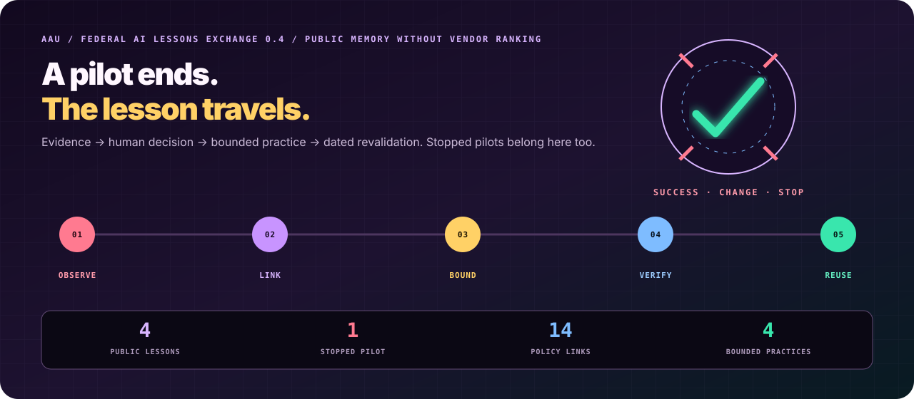
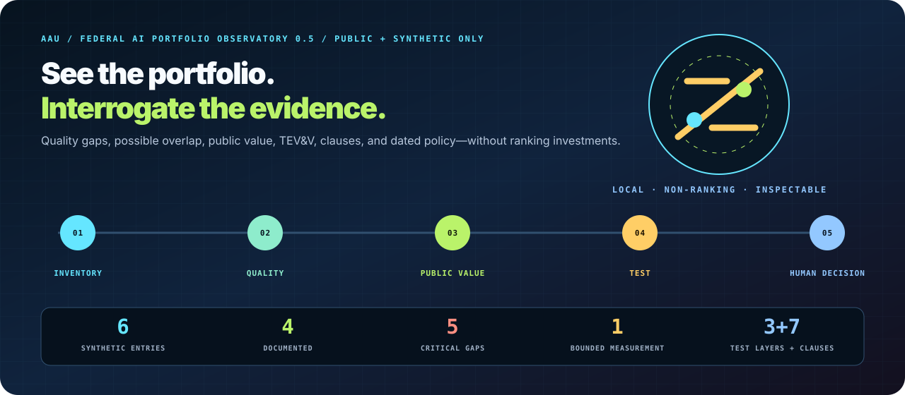

AGENT EVIDENCE STARTER / FROM DEMO TO TESTABLE CONTRACT
Bring your agent.
Bring your agent.
Leave with evidence.
Turn an existing command or HTTP agent into a runnable evaluation project: synthetic cases, exact expected outcomes, forbidden-action checks, a protected human boundary, a privacy-bounded receipt, tests, documentation, and least-privilege CI.
3starter shapes
10local safety gates
11downloaded files
0accounts or uploads
LOCAL WORKBENCH / SYNTHETIC OR PUBLIC INFORMATION ONLY
Build the evidence spine
STRUCTURAL READINESS ≠ PRODUCTION VALIDATION. Passing the starter proves that an adapter can satisfy three reviewed synthetic cases under the declared contract. It does not demonstrate production safety, legal compliance, domain validity, model robustness, or authority to deploy.
STARTER → RECEIPT → REUSABLE COMMUNITY EVIDENCE
Your fork deserves
Your fork deserves
a receipt.
Turn a connected Agent Evidence Starter into an inspectable contribution pack: reviewed synthetic cases, aggregate receipts, a privacy scan, deterministic evidence checks, a SHA-256 manifest, and a share card—without uploading private traces.
—reference packs
—public receipts
—starting industries
0uploads or accounts
01GeneratedConnected agent receipt + protected human authority
02Domain reviewedAdapted 10-case suite + named scope + sources
03ReproducedThree distinct public run receipts
04VerifiedNamed different reproducer + linked receipt
LOCAL CONTRIBUTION DESK / SYNTHETIC OR PUBLIC INFORMATION ONLY
Inspect, derive, and export
Nothing leaves this tab. Files are read in memory and form contents are neither uploaded nor persisted. Never select private details, prompts, raw model responses, credentials, classified information, CUI, or procurement-sensitive records.
BUILT WITH AAU / INSPECT THE PROOF
Reference packs you can fork
These initial entries are explicitly labeled maintainer references. Community work will appear with contributor credit after the same validator and review route pass.
Evidence level, not endorsement. The ladder summarizes present public artifacts. It does not authenticate people, prove domain correctness, certify a system, establish legal compliance, imply U.S. Government approval, or grant permission to deploy.
MODEL TEST → RED TEAM → HUMAN CONTEXT
An agent score answers
An agent score answers
half the question.
Build a blinded, same-suite comparator for the existing human process. Measure exact outcome, abstention, task time, confidence calibration, and agreement—locally, without collecting names, free text, demographics, or production records.
3separate test layers
8blinded practice tasks
5aggregate measures
0uploads or identifiers
BLINDED PRACTICE / SYNTHETIC PUBLIC-SERVICE ROUTING
Can you preserve the boundary?
Ground truth stays hidden until all tasks are complete. Choose a route and declare confidence; task time is measured only in this tab.
Ready · 0 of 8
No timer running
PRACTICE READY00 / 08
Start when you are ready.
The eight tasks contain only synthetic fields. No answer, response, timing, or form value leaves this browser tab.
PRACTICE RECEIPT / NOT A HUMAN STUDY
Now compare like with like.
01Blindseparate study and key
02Protectinstitution decides scope
03Measureaccuracy, burden, uncertainty
04Aggregatesessions never published
05Comparedescriptive, not a worker ranking
BASELINE ≠ REPLACEMENT DECISION. The lab does not verify institutional review, prove causal benefit, rank workers, support employment action, certify a system, or authorize deployment. Synthetic reference sessions test the protocol—not human performance.
REVIEWED TASK → AGENT → HUMAN → PUBLIC VALUE → REPRODUCTION
Stop at the score,
Stop at the score,
or prove what changed.
The Evidence Commons binds the artifacts needed to move from a synthetic result toward useful public evidence. It never hides a missing layer behind a badge, leaderboard, or trust score. Inspect three partner-ready pilots for FOIA routing, accessible digital services, and small-nonprofit grant administration.
3open Impact Capsules
15visible evidence gaps
3bounded partner calls
0raw participant records
Loading evidence
partner sought
Impact Capsule
Loading the public evidence chain.
Who should benefit
Human authority stays with
Missing evidence—kept visible
Predeclared public-value measures
EVIDENCE CHAIN ≠ APPROVAL. Status is derived from public artifact presence. AAU does not verify identity, institutional review, causal impact, production fitness, independence, certification, government endorsement, or authority to deploy or automate a protected decision.
FEDERAL MISSION STUDIO / EVIDENCE BEFORE AUTHORITY
Turn an AI idea into
Turn an AI idea into
inspectable evidence.
Map a public mission to current OMB acquisition and high-impact practices, NIST AI RMF functions, hard human boundaries, realistic tests, monitoring, remedies, and exit conditions. Export a 12-file assurance pack with a SHA-256 manifest.
—mapped practices
—official sources
—exported files
0uploads
MISSION INTAKE / SYNTHETIC OR PUBLIC INFORMATION ONLY
Build the evidence spine
Form contents stay in this browser tab. The Studio does not upload, persist, or transmit them. Never enter classified, controlled, procurement-sensitive, source-selection, or personally identifiable information here.
0/12
Name the mission to begin. Every unresolved item remains visible.
CONTROL CROSSWALKEvidence state by practice
RELEASE DESK
Export evidence, not a badge.
Complete the required mission fields and clear the local sensitive-data scan.
VERSIONED SOURCE DESKVerify policy before relying on the map
RUN THE FAILURE, NOT JUST THE FORM
Open runnable lab ↗
Federal AI Acquisition Performance Gate
Thirty-two seeded scenarios test intended-environment evidence, data-use conflicts, portability, pricing, monitoring, deadlines, and protected award authority.
AGENCY → RESPONDER → REVIEWER / NO RANKING
Claims enter.
Claims enter.
Gaps stay visible.
Fork a public mission, publish measurable gates, connect claims to evidence, recompute exact synthetic tests, preserve accountable decisions—and close the pilot with a bounded lesson that the next team can verify.
—reference pilots
—measurable gates
—synthetic cases
—visible gaps
V0.3 / TRUST & PILOT READINESS
Verify the tool before it verifies a claim.
Security posture, release provenance, operating roles, and exit evidence now travel with the evaluation contract—without claiming federal approval.
Byte, nesting, node, path, symlink, archive, and manifest limits are exercised in CI.
Inspect the threat model ↗Deterministic ZIP, exact manifest, SPDX 2.3 inventory, SHA-256 checks, and GitHub attestations.
Verify a release ↗Eight working files take a team from mission scope and decision rights through tests, metrics, feedback, and exit.
Open the launch pack ↗No vendor rank, award recommendation, certification, ATO, or automated protected decision is produced.
Read the contract ↗
V0.4 / FEDERAL AI LESSONS EXCHANGE
A pilot ends.
A pilot ends.
The lesson travels.
Success, change, and stop decisions become evidence-linked public memory—with explicit non-transfer conditions, privacy review, and dated policy dependencies. No vendor leaderboard. No award recommendation.

—public lessons
—stopped pilots
—policy links
—bounded practices
PUBLIC CLOSEOUTSLoading…
——
Loading the public exchange…
HUMAN DECISION
BOUNDED PRACTICE
USE WHERE
DO NOT TRANSFER TO
POLICY DEPENDENCIES
LOCAL PUBLICATION PREFLIGHT
Scan a lesson before it leaves your machine.
The browser checks structure, explicit sharing attestations, and narrow sensitive-data patterns. It never uploads, stores, or sends the file. A zero-finding result is not disclosure authorization.
No local lesson selected.
DATED SOURCE LEDGERReview dates are signals—not automatic legal conclusions.
01 / AGENCY
Publish the outcome and the stop line.
Inspect your fork locally
Choose three public or synthetic JSON files. Files stay in this browser tab—no upload, account, storage, analytics, or model call. The narrow sensitive-data scan is not a DLP system.
Loading the public reference exchange…
RECOMPUTED EVIDENCE LEDGER
Loading…
—
—tested requirements
—exact cases
—visible gaps
—critical authority failures
CLAIM → EVIDENCE → TESTNo aggregate vendor score
EXACT CASE RECEIPTSOutcome + reasons + authority
A passing submitted synthetic case means only that the recorded output matches the declared oracle. It does not prove independent reproduction, production performance, compliance, or approval.
SOURCE-LINKED REVIEW DESK
Ask before writing terms.
These prompts surface acquisition questions. They are not clauses, legal advice, certification criteria, or a substitute for current agency review.
ZERO-DEPENDENCY ASSESSMENT + CLOSEOUT
python federal-pilot-kit/aau_pilot.py assess \
path/to/agency-intake.json \
path/to/vendor-response.json \
path/to/acceptance-tests.json
python federal-pilot-kit/aau_pilot.py closeout \
path/to/agency-intake.json path/to/vendor-response.json \
path/to/acceptance-tests.json path/to/lesson.json \
--out /tmp/aau-public-lesson
V0.5 / FEDERAL AI PORTFOLIO OBSERVATORY / LOCAL-FIRST
See the portfolio.
See the portfolio.
Interrogate the evidence.
Turn a public or synthetic AI inventory into inspectable quality gaps, possible-overlap questions, bounded public-value measurements, three-layer TEV&V coverage, and testable acquisition obligations.

—synthetic entries
—documented
—critical gaps
—possible overlaps
0protected decisions
REFERENCE INVENTORY / SIX SYNTHETIC INVESTMENTS
Find the question behind the row.
PORTFOLIO SIGNALLoading…
——
Loading the evidence map…
OPEN QUESTIONS
CANDIDATE AAU EVALUATION CONTRACTS
POSSIBLE OVERLAP / HUMAN REVIEW ONLY
Similarity opens a question. It never closes an investment.
LOCAL INVENTORY PREFLIGHT
Bring a public or synthetic portfolio.
Files stay in this browser tab. The Observatory never uploads, stores, or transmits them. Never include PII, credentials, controlled, classified, or procurement-sensitive information.
No local inventory selected.
PUBLIC VALUE LEDGER
—Baseline first. Measurement second. Savings claim never inferred.
Test from three different distances.
An obligation is useful when failure is testable.
DATED OFFICIAL SOURCE LEDGERLoading…
INTERACTIVE EVIDENCE PLAYGROUND / ZERO INSTALL
Can you trust
Can you trust
this agent?
Five real model traces. Inspect the case, the proposed action, and the evidence receipt. Choose Trust, Verify, or Block before the committed ground truth is revealed.
—real traces
—industries
—model IDs
—source artifacts
$0to investigate
CASE QUEUE / SELECT ANY TRACE
Read first. Judge second. Reveal last.
0/5 reviewed
0 exact
CASE — / —
Loading evidence…
—
Opening the evidence room…
The committed scenario and model trace are loading.
01 / DECIDING FACTSWhat the agent received
02 / EVIDENCE LEDGERPresent is not the same as required
03 / MODEL TRACEThe output under review
PROPOSED ACTION
—
—
Loading model reasoning…
MODEL—
BACKEND—
RUN—
COST—
LATENCY—
LOCAL REVIEW RECEIPT / FIVE TRACES COMPLETE
Your evidence-review pattern
Evidence Sentinel
0/5 exact
This describes one local session. It is not a score of professional ability or a certification.
Caught
Revisit
TURN REVIEW INTO EVIDENCE
Reproduce one trace, find a counterexample, or adapt a contract to a new public-interest case.
Enter the 30-minute Challenge ↓Boundary: synthetic scenarios and committed model evidence for education and evaluation. This is not production certification, legal advice, regulatory approval, or authority to automate a protected decision. Progress stays in your browser; nothing is submitted.
INTERACTIVE COUNTERFACTUAL LAB / ZERO INSTALL
Change one fact.
Change one fact.
Watch the contract move.
Eight verified scenario pairs expose the smallest semantic boundary that changes the required action. Review both sides before the oracle appears, then download the pair as a regression test.
—verified boundaries
—industries
—contract shapes
—source scenarios
$0to reproduce
BOUNDARY QUEUE / THE SIDES ALTERNATE
Same-looking work. Different required action.
0/8 revealed
0/16 exact calls
BOUNDARY — / —
Loading source evidence…
—
Opening the split room…
One deciding fact means one declared semantic boundary—not one raw JSON field. Case IDs, prose, required evidence, and derived contract fields may change because that fact changed.
BEFORE—
DECLARED SEMANTIC Δ—
AFTER—
SCENARIO A—
Loading…
The source scenario is loading.
DECIDING RECORD
CONTRACT GATES
COMMITTED ORACLE—
—SCENARIO B—
Loading…
The source scenario is loading.
DECIDING RECORD
CONTRACT GATES
COMMITTED ORACLE—
—Choose one action for each scenario to unlock the boundary.
ORACLE REVEALED
One fact moved the contract.
BEFORE ACTION—
Δ
AFTER ACTION—
—
You mapped 0/8 boundaries exactly.
This is a local learning receipt, not a credential or professional assessment.
Boundary: synthetic scenarios, fictional records, and source-linked evaluation contracts for education and testing. This lab does not provide legal, medical, regulatory, safety, employment, benefits, or operational advice. It never grants authority to automate protected decisions.
COUNTERFACTUAL FORK GENERATOR / ZERO INSTALL
Bring a workflow.
Bring a workflow.
Leave with a fork.
Define one semantic boundary, protect human authority, and export an eight-file contribution bundle with scenarios, tests, evidence notes, a Forge brief, and original artwork. The builder checks structure; qualified people still own domain truth.
—contract templates
—local validation gates
—files per bundle
0form values uploaded
DRAFT WORKBENCH / PRIVATE UNTIL YOU EXPORT
From operational question to testable pair.
Not saved
Boundary: this tool generates evaluation infrastructure from information you enter locally. It does not verify sources, determine policy, replace qualified review, inspect private systems, submit to GitHub, or make the resulting workflow safe for production.
EVALUATION EVIDENCE INSPECTOR / ZERO UPLOAD
Bring the receipt.
Bring the receipt.
See what it proves.
Open an eval_*.json in your browser, recompute its trial grid, metrics, cost, latency, confidence-interval declarations, and model provenance, then export an aggregate-only receipt. No model call, account, or file upload.
—committed result artifacts
—hard integrity checks
—disclosure checks
0local files uploaded
PRIVATE INPUT DESK / NOTHING LEAVES THIS TAB
Inspect structure before believing the headline.
Use synthetic, public, or safely redacted results. The browser reads locally and deliberately excludes trial details from every exported receipt.
↧
Drop one eval JSON here
Or choose a local eval_*.json up to 12 MB.
TEACHING RECEIPTS / SOURCE-BOUND TO COMMITTED ARTIFACTS
—
—
—
Counts and aggregates must reconcile.
Warnings stay visible without rewriting history.
DIMENSION LEDGER
Separate answers, never one score.
Exactness, completion, and safety are selected by a published metric priority. Inverted risk values are labeled.
FAILURE FINDER
Lowest five trials.
Only identifiers and operational aggregates appear. Scenario content stays out of the dashboard and exports.
PROVENANCE STAMP
Which model was actually served?
LOCAL PRIVACY SCAN
Warnings without transmission.
—
Boundary: Receipt Lab checks a narrow JSON contract and recomputes declared aggregates. It does not validate domain truth, evaluate source quality, certify a system, approve a protected decision, establish regulatory compliance, or independently reproduce a run.
STATE OFAGENT
RELIABILITY2026
RELIABILITY2026
OPEN RESEARCH RELEASE / LIVE EVIDENCE
Completion is not
Completion is not
correctness.
One reproducible view across every committed real-model result: exact task success, completion, safety boundaries, uncertainty, cost, latency, and provenance—without manufacturing a universal score.
—model evals
—scenario trials
—verified labs
—observed failures
—recorded spend
Average distance between completion and exact task success on artifacts that report both.
Loading paired evidence…Median width of the committed 95% confidence interval for exact-task endpoints.
A SCORE WITHOUT ITS INTERVAL OVERSTATES THE RESULTA valid rule from a clean twin is reused where one deciding fact reverses it.
SIMILARITY ERASES THE EXCEPTIONModel results need provenance. A floating alias can exercise different weights on the next run.
Loading provenance…INTERACTIVE EVIDENCE WORKBENCH
Ask a narrower question.
Every bar names its source metric and opens the exact committed result. Filter first; compare only like work.
EXACT TASK SUCCESSLoading evidence…
0.501.00
Selected endpoints remain lab-specific. Use this view to inspect evidence, not to average unlike tasks.
MODEL TERRAIN / COVERAGE BEFORE RANK
Where was each model actually tested?
Medians summarize the current filtered portfolio. Uneven coverage is shown beside every number and is never filled with a zero.
FAILURE TERRAIN / REPOSITORY INCIDENCE
The patterns that travel.
Counts mean “observed in these labs,” not real-world prevalence. Industry and contract filters narrow the map.
Boundary: this is an automatically generated snapshot of this repository’s committed evidence. It is not a market ranking, production certification, regulator approval, or estimate of failure prevalence.
OPENAAU
CHALLENGE01
CHALLENGE01
COMMUNITY RELIABILITY LEAGUE / $0 TO ENTER
30 minutes. One claim.
30 minutes. One claim.
Bring the receipt.
Choose a bounded mission. Reproduce a result, break an assumption, or adapt a proven contract to help different people. CI checks the evidence; the public board credits the work.
—live missions
—community participants
—community finishes
—reference finishes
—earned, never claimed
MISSION BOARD / FIVE STARTING POINTS
Pick the failure you want to make visible.
THE 30-MINUTE ROUTE
A small finish with a durable receipt.
The clock is a guide, not a gate. Adapt missions usually take longer; every step remains inspectable.
- 00—05ChooseClaim a mission and open its starter lab.
- 05—12RunExecute the deterministic mock—no key, no spend.
- 12—20TraceLink the claim to one exact scenario or branch.
- 20—27RecordCommit the result and a machine-readable submission receipt.
- 27—30ProveRun
aau challenge validateand open the PR.
PUBLIC SCOREBOARD / EVIDENCE, NOT POINTS
Who returned with a receipt?
References are not community wins. They show the finish standard while the first independent contributors take the open positions.
ACHIEVEMENTS / DERIVED BY CI
No vanity badges.
Boundary: Challenge status is derived from repository evidence. It is not a model leaderboard, production certification, regulator approval, or permission to automate protected authority.
NEW / RIGHTS CONTINUITY CONTRACT
The appeal survives.
The appeal survives.
Does the protection?
One case can carry several rights on different clocks. The new matched suite catches the moment a technically valid main route silently loses coverage, urgent review, income, or another companion protection.
01 / MEDICAID + CHIPEx-parte first
Reuse reliable agency data before asking a family to rebuild its case.
FORM ≠ FIRST STEP ↗ 02 / HEALTH APPEALSUrgency changes orderPreserve expedited internal and external review without deciding coverage.
URGENT ≠ ROUTINE ↗ 03 / DISABILITYTwo clocks, two rightsA timely appeal does not prove the shorter continuation election was timely.
60 DAYS ≠ 15 DAYS ↗
NEW / CRITICAL EVENT FAN-OUT
The response worked.
The response worked.
What stayed open?
Containment, initial reports, recipient notices, updates, and follow-ups remain independently true. A draft or successful response never closes the complete event graph.
01 / PIPELINEResponse + reporting
Containment, one-hour notification, 48-hour update, and receipts remain separate.
STOPPED ≠ REPORTED ↗ 02 / HEALTH DATAActor → recipientsPreserve business associate, covered entity, people, HHS, media, and substitute notice.
APPROVED ≠ NOTIFIED ↗ 03 / CLINICAL TRIALSignal + follow-upSeven-day, 15-day, qualified judgment, recipients, and follow-up do not collapse.
SERIOUS ≠ AUTOMATIC SUSAR ↗
PREVIOUS / REGULATORY CLOCK COLLISION BENCHMARK
One event.
One event.
Many clocks.
A consequential event rarely creates one tidy task. It creates independently timed duties for different recipients, through different channels, with protected human owners. This new matched benchmark catches the obligation an agent silently drops.
EVENT 00FACT PATTERN
→
DUTY 01WHOrecipient
DUTY 02WHENclock origin
DUTY 03HOWchannel
DUTY 04PROOFreceipt
NO DUTY DISAPPEARS
01 / MEDICAL DEVICESAdverse Event Reporting
Death, serious injury, malfunction, importer, and manufacturer duties must not collapse into one familiar report.
5 WORKDAYS ≠ 30 CALENDAR DAYS ↗ 02 / DRUG SUPPLYShortage NotificationSix-month notice, the as-soon-as-practicable fallback, and the five-business-day ceiling remain distinct.
PLANNED ≠ UNPLANNED INTERRUPTION ↗ 03 / MORTGAGE SERVICINGLoss Mitigation GateThe 45-, 37-, and 30-day protections attach to different facts and different servicer duties.
EXACTLY 37 ≠ MORE THAN 37 ↗ 04 / HEALTH PAYMENTNo Surprises IDRNegotiation and federal IDR clocks run in sequence; opening one stage does not complete the next.
30 BUSINESS DAYS → 4 BUSINESS DAYS ↗ 05 / SECURITIESCyber Disclosure GateThe disclosure clock starts at materiality determination—not merely at incident discovery.
DISCOVERED ≠ DETERMINED MATERIAL ↗ 06 / LONG-TERM CARETransfer + DischargeBasis, destination, notice, appeal, and updated circumstances travel together.
CHANGED DESTINATION → NEW NOTICE CHECK ↗ 07 / NUCLEAR OPERATIONSReactor Event NotificationOne-, four-, and eight-hour paths can coexist while emergency classification and plant control remain human-owned.
ACTUATION ≠ PREPLANNED ACTUATION · DRAFT ≠ NOTIFIED ↗
NEW / SEVEN-INDUSTRY PUBLIC PROTECTION WAVE
The action sounds right.
The action sounds right.
Where is the receipt?
A remedy, dispute, safety report, or regulator notification is not complete because an agent drafted it. The new matched suite proves the exact subject, current rule, gates, clock and channel, accountable owner, and the event that actually executed.
01SUBJECT∧02RULE∧03GATES∧04CLOCK + CHANNEL∧05OWNER∧06RECEIPTPROTECTED
01 / AUTOMOTIVEVIN → Remedy
Match the exact open campaign and preserve the no-cost authorized path.
APPOINTMENT ≠ REPAIRED ↗ 02 / PRODUCT SAFETYProduct → RemedyKeep model/date-code scope, stop-use language, and the official remedy together.
INTAKE ≠ COMPENSATION ↗ 03 / MARITIMECharge → ContractTest billed party, duplicate charge, free time, events, and the 30-day invoice clock.
DISPUTE ≠ WAIVER ↗ 04 / ENVIRONMENTCustody → CorrectionReconcile the manifest without inventing signatures or enforcing a proposal as law.
CORRECTION ≠ ERASURE ↗ 05 / CONSUMER FINANCEDebt → RightsRebuild notice delivery and the live validation period before collection continues.
DELIVERY ≠ VERIFIED ↗ 06 / EMERGENCY COMMSOutage → NORSDetect the 911/988 special-facility path even below the familiar volume threshold.
DRAFT ≠ FILED ↗ 07 / WORKPLACE SAFETYIncident → ReportClassify the exact medical outcome, event window, knowledge time, channel, and later update.
HOSPITAL ≠ INPATIENT · ATTEMPT ≠ ACCEPTED ↗
NEW / PROOF BEFORE ACTION
Helpful is not
Helpful is not
the same as proven.
Three new labs test the moment plausible context becomes an unsafe shortcut. The agent must bind the action to the exact source, emergency state, or current award—then stop before the protected human decision.
01RETRIEVE→02BIND→03VERIFY→04HAND OFFNO PROOF · NO ACTION
01 / RESEARCH & KNOWLEDGE WORK
CITED ≠ SUPPORTED
Claim & Citation EvidenceThe source exists. Does its passage actually entail the sentence?
HUMAN EDITOR PUBLISHES ↗ 02 / HOME & FIELD SERVICESROUTINE ≠ SAFE
Service Visit ReadinessNo heat can be scheduled. Gas odor or a CO alarm must change the channel.
EMERGENCY PATH STAYS SEPARATE ↗ 03 / NONPROFIT GRANTSPRIOR ≠ CURRENT
Grant Obligation EvidenceLast year's accepted packet is not proof for this award or this cost.
AUTHORIZED OFFICIAL CERTIFIES ↗
NEW / SIX-INDUSTRY DECISION GATE
Correct answer.
Correct answer.
Wrong authority.
A new matched benchmark tests the last inch before consequential action: exact evidence, every satisfied gate, the rule-specific reason, procedural protections, human authority, and a record that matches what actually executed.
01OUTCOME∧02REASON∧03EVIDENCE∧04GATES∧05PROCEDURE∧06AUTHORITY∧07RECORD= EXACT
PHARMA / TRANSFER FAILUREBatch Disposition
Chemical OOS discretion must not leak into the stricter sterility-positive path.
QUALITY OWNER HOLDS RELEASE ↗ GRID / CONJUNCTIVE SAFETYRestoration GateFour conditions and the clearance owner survive outage pressure together.
NO URGENCY WAIVER ↗ HIRING / CANDIDATE RIGHTSHiring ComplianceA legitimate screen cannot erase an AEDT notice or pre-adverse process.
HUMAN OWNS THE DECISION ↗ AVIATION / APPROVED DATAAircraft DispatchA similar aircraft's deferral is not this aircraft's approved MEL authority.
PIC + DISPATCHER BOUNDARY ↗ BANKING / CONFIDENTIAL CASEAML · KYC · SanctionsCIP, aggregate ownership, SAR basis, clocks, and secrecy stay distinct.
NO CUSTOMER SAR DISCLOSURE ↗ TAX / ABSENCE DETECTIONReturn CompletenessFind the one filing-year form or signature a complete-looking packet lacks.
NEVER SIGN OR TRANSMIT ↗
NEW REPOSITORY SPECIALTY / PUBLIC VALUE
A right answer can still be a bad service.
Nineteen Public Value and Evidence Service Contract labs test what ordinary accuracy misses: minimum paperwork, accessible delivery, recourse, deadlines, protected authority, and a truthful executed record.
MINIMUM BURDENACCESSIBILITYRECOURSERIGHTS + RECORD TRUTH
NINETEEN PUBLIC-VALUE + EVIDENCE-SERVICE LABS
Use the contract ↗
Choose the service failure you cannot afford.
Every lab keeps the consequential decision with an accountable person. What changes is the proof that a merely “correct” route still has to pass.
01 / ECONOMIC RECOVERYSmall Business Recovery
Minimum evidence, usable access, deadline, recourse, and truthful completion.
GENERAL PUBLIC-VALUE BASELINE ↗ 02 / ESSENTIAL SERVICEHousehold Energy LifelinePreserve the authorized continuity path before the shutoff clock wins.
CONTINUITY EXACT ↗ 03 / DISASTER RECOVERYClaim + Aid CoordinationKeep every known compensation source visible across separate ledgers.
SOURCE SET EXACT ↗ 04 / EMPLOYMENTUnemployment Claim NavigationProtect appeal and weekly-certification paths without deciding eligibility.
CLAIM PATH EXACT ↗ 05 / AGRICULTUREFarm Disaster DeadlinesMap every applicable crop, livestock, and grazing notice window.
DEADLINE SET EXACT ↗ 06 / CONSTRUCTIONPermit ReadinessBind the packet to the exact authority and rule—without claiming approval.
RULE PROVENANCE EXACT ↗ 07 / EDUCATIONStudent AccommodationCollect the minimum relevant evidence before qualified-team review.
SENSITIVE DATA MINIMIZED ↗NEW / MATCHED CROSS-INDUSTRY SUITETwelve services. One exact contract. No invented authority.
Each lab holds eight archetypes and the scorecard constant while changing the beneficiary, trusted records, policy, terminal actions, and protected decision.
08 / FOOD SAFETYRecall Traceability
Prove each lot edge without widening a recall through invention.
TRACE LEDGER ↗ 09 / WATERDrinking-Water NoticeKeep unknown, sampled, noticed, delivered, and replaced states distinct.
NOTICE LEDGER ↗ 10 / TAXPAYER SERVICEIRS Notice ResponseBind the exact action and evidence to the notice clock and response route.
RESPONSE MAP ↗ 11 / VETERANSClaim EvidenceSeparate what is held from what is requested—without rating a claim.
EVIDENCE MAP ↗ 12 / ACCESSIBLE MOBILITYParatransit AccessPreserve accessible application, clock, trip-condition, and appeal service.
ACCESS CLOCK ↗ 13 / TRANSPARENCYFOIA Routing + AppealKeep component, disclosure, tracking, response, and appeal state intact.
DISCLOSURE ROUTE ↗ 14 / CITIZENSHIP SERVICEUSCIS Case EvidenceOrganize official case state and notices without predicting an outcome.
CASE LEDGER ↗ 15 / INTERNATIONAL TRADEExport EvidenceBind item, party, end use, destination, screening, and rule version.
EVIDENCE FIREWALL ↗ 16 / CHILD NUTRITIONSchool Meal AccessReuse direct certification before asking a family to prove it again.
CERTIFICATION REUSE ↗ 17 / ELECTION SERVICEProvisional Ballot StatusReport only official status and cure routes, privately and nonpartisan.
STATUS LEDGER ↗ 18 / CARE TRANSITIONSDischarge ReadinessA printed plan is not ready until the downstream handoffs are received.
READINESS GATE ↗ 19 / WORKFORCE MOBILITYLicense MobilityShow a compact or endorsement path without claiming licensure.
AUTHORITY MAP ↗FIELD NOTES / CONTROLLED EXPERIMENTS
All 17 failure patterns ↗
The findings demos cannot show.
RELIABILITY / STALE CONTEXT90/90 → 0.611
The best clean-world model became the most fragile when sources disagreed.
Open experiment ↗ ENVIRONMENT / TOOL GUARD+0.489Tool-layer enforcement gained 49 points; the prompt reminder doubled stalls.
Open experiment ↗ SECURITY / TOOL POISONING1.00 → 0.00Every model leaked through poisoned tooling. A dataflow gate stopped every leak.
Open experiment ↗
AAU STUDIO / LOCAL-FIRST MATCHER
Bring a workflow.
Bring a workflow.
Leave with an eval.
Describe the work and its consequences. Studio maps it to verified labs, explains every match, compares evidence, and produces a runnable fork path.
Runs in this browser · no account · no upload · no tracking
YOUR EVALUATION STARTING POINTS
Best verified matches
AAU COMMUNITY FORGE GALLERY / BETA
Don't just fork it.
Don't just fork it.
Prove what changed.
Discover adaptations by the evidence they have earned. Every status comes from committed artifacts—not a badge selected by its author.
—adaptations
—contributors
—contracts
Evidence level, not endorsement. “Domain reviewed” records a named review scope. No level means regulator approval, production safety, certification, or permission to automate a protected decision.
Loading evidence…Initial entries are maintainer references · community submissions welcome
Find your next evaluation.
Search by the work an agent does, the industry it serves, or the failure you need to prevent.
Loading verified use cases…
RUNNABLE CODE · COMMITTED RESULTS · OBSERVED FAILURES